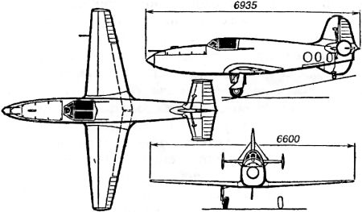
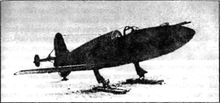
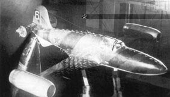

Самолет с ракетным двигателем «БИ-1»
Разумеется, Сергей Королев был далеко не единственным конструктором, понимавшим, какие преимущества дает ракетный двигатель самолету и авиации. О необходимости проектирования и строительства экспериментальных летательных аппаратов с реактивными моторами говорили многие и хотя большинство из них видели в решении этой задачи лишь возможность для качественного улучшения самолетного парка, задел «приземленных» конструкторов вполне мог стать первой ступенью на пути к звездам, как мечтали о том Фридрих Цандер и Сергей Королев.
Так, идея скоростного истребителя с ракетным двигателем возникла и получила развитие в ОКБ известного советского авиаконструктора Виктора Федоровича Болховитинова. Весной 1941 года два инженера ОКБ — начальник бригады механизмов Александр Яковлевич Березняк и начальник бригады двигателей Алексей Михайлович Исаев — по своей инициативе начали разработку эскизного проекта истребителя нового типа, обещавшего скорость 800 км/ч и более.
Перед тем, в 1940 году, они посетили РНИИ, где познакомились с конструктором Леонидом Душкиным, который как раз работал над жидкостно-реактивным двигателем для стартового ускорителя реактивного истребителя «302», создававшегося тогда в институте. Вероятно, именно Душкин сумел заинтересовать двух инженеров-авиационщиков идеей, оставшейся в наследство от Королева.
Уже на этапе эскизного проектирования, который осуществлялся в свободное от работы время, Березняку и Исаеву удалось решить ряд сложнейших технических задач. Первоначально они проектировали самолет под двигатель с тягой в 1400 килограммов и с турбонасосной подачей топлива в камеру сгорания, но затем с целью сокращения времени создания самолета более сложная, тяжелая и нуждавшаяся в доводке турбонасосная подача топлива была заменена более простой и уже доведенной вытеснительной подачей с использованием сжатого до 145–148 атмосфер воздуха из бортовых баллонов емкостью 115 литров. За счет этого предполагалось уменьшить размеры машины, улучшить ее разгонные характеристики. Этот вариант самолета с двигателем «Д-1А» (конструкции Леонида Душкина и Владимира Штоколова) стал основным и получил обозначение «БИ»; он выполнялся по обычной в то время схеме одноместного свободнонесущего низкоплана в основном деревянной конструкции.
С началом войны Березняк и Исаев предложили своему шефу Болховитинову подать проект постановления о разработке перспективного перехватчика. Было подготовлено и послано письмо от РНИИ и завода, которое подписали 7 участников, в том числе конструкторы самолета, конструктор двигателя Душкин, директор завода Болховитинов и главный инженер РНИИ Костиков. Любопытно, что во время обсуждения проекта и подготовки письма высказывалось мнение, что такой истребитель будет через полгода не нужен, поскольку к тому времени война закончится победой Красной Армии.
Письмо отправили 9 июля 1941 года, и вскоре все заинтересованные лица были вызваны в Кремль. Предложение инженеров руководство страны одобрило и постановлением Государственного комитета обороны, подписанным Сталиным, бюро Болховитинова поручалось в кратчайший срок (35 дней, вместо трех-четырех месяцев, как того хотели Березняк и Исаев) создать истребитель-перехватчик с ЖРД, а НИИ-3 (так к тому времени назывался РНИИ) — двигатель «РДА-1-1100» для этого самолета.
ОКБ Болховитинова было переведено «на казарменное положение», работали, не выходя с завода. Проектирование закончили за 12 дней. Самолет, согласно этому проекту, имел размах крыльев всего 6,5 метра, длину — 6,4 метра, взлетный вес составил 1650 килограммов, из них 710 килограммов — азотная кислота и керосин. Строили самолет без детальных рабочих чертежей, основные элементы вычерчивали в натуральную величину на фанере — так называемая плазово-шаблонная технология. Однако стальные баллоны для сжатого воздуха, прочные сварные баки для кислоты и керосина, редукторы, трубопроводы, клапаны, рулевое управление, приборы и электрооборудование требовали совсем других сроков конструирования и изготовления.
1 сентября, с опозданием на пять дней, первый экземпляр самолета был отправлен на испытания. На аэродроме были прежде всего начаты пробежки и подлеты на буксире, а силовая установка еще дорабатывалась.
По требованию заместителя наркома авиационной промышленности по опытному самолетостроению Александра Яковлева планер самолета «БИ» был подготовлен к исследованиям в натурной аэродинамической трубе ЦАГИ. Продувки «БИ» проводились под руководством Георгия Бюшгенса (через 45 лет он будет давать заключение по аэродинамике «Бурана»). Сразу после завершения аэродинамических исследований начались летные испытания самолета «БИ» в планерном варианте на буксире за самолетом «Пе-2».
За 15 полетов летчик Борис Николаевич Кудрин снял все основные летные характеристики «БИ» на малых скоростях. Испытания подтвердили, что все аэродинамические данные самолета, характеристики устойчивости и управляемости соответствуют расчетным. Более того, Кудрин и другие летчики, управлявшие планером «БИ», доказали, что после выключения ракетного двигателя перехватчик с высоты 3000–4000 метров сможет вернуться на свой или другой ближайший аэродром в режиме планирования.
16 октября 1941 года, в самый разгар немецкого наступления на Москву, руководство приняло решение об эвакуации КБ и завода Болховитинова на Урал. Уже на следующий день стенд был демонтирован, вся материальная часть и документация отправлены в Свердловск (Екатеринбург). Туда же в 20-х числах октября были эвакуированы сотрудники и оборудование НИИ-3 вместе с КБ Душкина.
После перебазирования на Урал работы над созданием перехватчика «БИ» продолжились в декабре 1941 года в небольшом поселке Билимбай (60 километров западнее Свердловска). КБ и заводу Болховитинова была отведена территория старого литейного завода, где в чрезвычайно трудных условиях и в короткий срок были выполнены восстановительные работы.
Для продолжения отработки самолетной двигательной установки на берегу прилегающего к заводу водоема, на бывшей плотине, построили фанерную времянку, в которой разместили стенд-люльку. От РНИИ испытаниями руководил Арвид Палло, а от ОКБ — инженер Алексей Росляков.
Вместо заболевшего летчика-испытателя Кудрина командование ВВС направило капитана Григория Яковлевича Бахчиванджи (Бахчи), который тут же едва не погиб. 20 февраля 1942 года при запуске двигателя на испытательном стенде, несмотря на грамотные действия Бахчиванджи, произошел взрыв. Струя азотной кислоты под давлением облила лицо и одежду стоявшего рядом Арвида Палло. При взрыве головка двигателя сорвалась с креплений, пролетела между баками азотной кислоты, ударилась о бронеспинку сиденья пилота и сорвала крепежные болты. Бахчиванджи швырнуло головой на доску приборов. Обоих сразу увезли в больницу. К счастью, Бахчиванджи отделался легкой травмой, а глаза Палло спасли очки, хотя ожог на лице последнего остался на всю жизнь.
В марте 1942 года стенд был восстановлен, а в систему питания ЖРД были внесены изменения. На летном экземпляре двигателя провели контрольные гидравлические и 14 огневых испытаний.
25 апреля самолет был переправлен из Билимбая в Кольцово (НИИ ВВС). 30 апреля провели два контрольных запуска двигателя (первый — Палло, второй — Бахчиванджи). Начались работы по подготовке «БИ» к полету.
В конечном виде этот ракетоплан выглядел так. Конструкция — цельнодеревянная, фюзеляж — фанерный монокок, оклеенный полотном, крыло — многолонжеронное с фанерной обшивкой, оперение — фанера в 2 миллиметра, рули и элероны с полотняной обшивкой, баки-баллоны — сварные из хромансиля, шасси — с колесами малых размеров, убираемое пневматически в крыло в направлении оси самолета. Для уменьшения посадочной скорости на задней кромке крыла на участке между бортом фюзеляжа и небольшим элероном устанавливались посадочные щитки Шренка с углом отклонения 50°. Хвостовое оперение нормальное, стабилизатор расчален к фюзеляжу и килю. Небольшие круглые «шайбы» вертикального оперения на концах стабилизатора были установлены уже после постройки опытного самолета в процессе аэродинамических и летных испытаний. Элероны, рули и закрылки имели металлический каркас, обшитый полотном.
Внутри нижней передней части фюзеляжа располагались два воздушных и два керосиновых баллона. За кабиной летчика размещались баллоны с азотной кислотой и воздухом. Кабина летчика имела бронезащиту из передней бронеплиты и бронеспинки толщиной 5,5 миллиметра. Две пушки ШВАК-20 (с 45 снарядами каждая) были установлены перед кабиной летчика в верхней части фюзеляжа на деревянном лафете под съемной (на замках) крышкой. Самолет по вооружению был полноценным истребителем: имелось электроуправление огнем и пневматическая перезарядка.
Двигатель «Д-1А-1100» тягой 1100 килограммов устанавливался в хвостовой части фюзеляжа. Топливо — тракторный керосин, а в качестве окислителя применялась концентрированная 96–98 %-ная азотная кислота, которые подавались в двигатель под давлением воздуха из бортовых баллонов (на килограмм керосина приходилось 4,2 килограмма окислителя). Двигатель расходовал 6 килограммов керосина и кислоты в секунду. Общий запас топлива на борту самолета, разный 705 килограммам, обеспечивал работу двигателя в течение почти 2 минут.

Первый полет на истребителе «БИ» (иногда обозначавшемся как «БИ-1») летчик Бахчиванджи выполнил 15 мая 1942 года. Взлетная масса самолета в первом полете была ограничена 1300 килограммами, а двигатель отрегулирован на тягу 800 килограммов. Полет продолжался чуть более 3 минут.
О первом полете «БИ» вспоминает инженер-конструктор Борис Черток:
«Все отошли от самолета, кроме Палло. Он в последний раз хотел убедиться, что никакой течи нет. Внешне все было сухо.
Бахчи спокойно сказал: «От хвоста», — закрыл фонарь, включил подачу компонентов и зажигание.
Мы все столпились метрах в пятидесяти от самолета. Каждый из нас уже не раз видел работу двигателя на стенде и при пробежках самолета здесь, на аэродроме. Когда из хвоста крохотного самолета вырвалось ослепительное пламя, все вздрогнули. Видимо, сказалось нервное напряжение длительного ожидания.
Рев двигателя над затихшим аэродромом и яркий факел возвестили начало новой эры. Сотни людей 15 мая 1942 года наблюдали, как самолет стал быстро разбегаться по взлетной полосе. Он легко оторвался от земли и взлетел с резким набором высоты. С работающим двигателем самолет развернулся в одну сторону на 90 градусов, потом в другую, только успел перейти с крутого подъема на горизонтальный полет и факел исчез.
Росляков, стоящий рядом, взглянул на остановленный хронометр: «Шестьдесят пять секунд. Топливо кончилось».
Садился БИ, стремительно приближаясь к земле с неработающим двигателем. Это была первая для Бахчи посадка в таком режиме. Она получилась жесткой. Одна стойка шасси подломилась, колесо отскочило и покатилось по аэродрому. Бахчи успел откинуть фонарь и выбраться из машины раньше, чем подъехали Федоров и Болховитинов, а также пожарная и санитарная машины. Бахчи был очень огорчен неудачной посадкой. Но подумаешь, какая беда — подломились шасси. Подбежавшая толпа, несмотря на протесты, тут же начала качать Бахчи».
Самописцы зафиксировали максимальную высоту полета 840 метров, скорость — 400 км/ч, скороподъемность — 23 м/с. В послеполетном донесении летчик отмечал, что полет на самолете «БИ» в сравнении с обычными типами самолетов исключительно приятен: перед летчиком нет винта и мотора, не слышно шума, выхлопные газы в кабину не попадают; летчик, сидя в передней части самолета, имеет полный обзор передней полусферы и значительно лучший, чем на обычном самолете, обзор задней полусферы; расположение приборов и рычагов управления удачное, видимость их хорошая, кабина не загромождена; по легкости управления самолет превосходит современные ему истребители.
Государственная комиссия, призванная оценить результаты первого полета, в своем заключении писала: «Взлет и полет самолета БИ-1 с ракетным двигателем, впервые примененным в качестве основного двигателя самолета, доказал возможность практического осуществления полета на новом принципе, что открывает новое направление развития авиации».
В связи с износом конструкции планера «БИ-1», обусловленным агрессивным воздействием паров азотной кислоты, последующие летные испытания проводились на втором «БИ-2» и третьем «БИ-3» опытных самолетах, отличавшихся от первого только наличием лыжного шасси. Одновременно было принято решение начать постройку небольшой серии самолетов «БИ-ВС» для ИХ войсковых испытаний. От опытных самолетов «БИ-ВС» отличались вооружением: в дополнение к двум пушкам под фюзеляжем по продольной оси самолета перед кабиной летчика устанавливалась бомбовая кассета, закрытая обтекателем. В кассете размещалось десять мелких бомб массой по 2,5 килограмма, обладавших большой взрывной силой. Предполагалось, что эти бомбы будут сбрасываться над бомбардировщиками, идущими в боевом строю, и поражать их ударной волной и осколками.

Второй полет опытного самолета «БИ» состоялся 10 января 1943 года. За короткий срок на нем были выполнены четыре полета: три летчиком Бахчиванджи и один (12 января) летчиком-испытателем Константином Груздевым. В этих полетах были зафиксированы наивысшие летные показатели самолета «БИ»: максимальная скорость до 675 км/ч (расчетная — 1020 км/ч на высоте 10 километров), вертикальная скороподъемность — 82 м/с, высота полета — 4000 метров, время полета — 6 минут 22 секунды, продолжительность работы двигателя — 84 секунды.
В полете Груздева при выпуске шасси перед посадкой оторвалась одна лыжа, но он благополучно посадил самолет.
В воспоминаниях Палло имеется колоритное высказывание Груздева после полета на «БИ»: «И быстро, и страшно, и очень позади. Как черт на метле».
Полет на «БИ» был действительно очень труден в моральном смысле. Сесть на нем можно было только после выработки горючего, неприятно было соседство с азотной кислотой под большим давлением, иногда прорывавшейся наружу через стыки проводки, а то и через стенки трубок и баков. Эти повреждения приходилось все время устранять, что сильно задерживало полеты, продолжавшиеся всю зиму 1942/43 годов.
Шестой и седьмой полеты выполнялись Бахчиванджи на «БИ-3». Задание летчику на седьмой полет, состоявшийся 27 марта 1943 года, предусматривало доведение скорости горизонтального полета самолета до 750–800 км/ч по прибору на высоте 2 километров. По наблюдениям с земли, седьмой полет, вплоть до конца работы двигателя на 78-й секунде, протекал нормально. После окончания работы двигателя самолет, находившийся в горизонтальном полете, опустил нос, вошел в пикирование и под углом около 50° ударился о землю. Летчик-испытатель Григорий Бахчиванджи погиб. В 1973 году, через 30 лет после гибели, ему было присвоено звание Героя Советского Союза.
Комиссия, расследовавшая обстоятельства катастрофы, в то время не смогла установить подлинные причины перехода в пикирование самолета «БИ». Но в своем заключении она отмечала, что еще не изучены явления, происходящие при скоростях полета порядка 800-1000 км/ч. По мнению комиссии, на этих скоростях могли появиться новые факторы, воздействующие на управляемость и устойчивость, которые расходились с принятыми в то время представлениями, а следовательно, остались неучтенными.
В 1943 году в эксплуатацию была пущена аэродинамическая труба больших скоростей Т-106 ЦАГИ. В ней сразу же начали проводить широкие исследования моделей самолетов и их элементов при больших дозвуковых скоростях. Была испытана и модель самолета «БИ» для выявления причин катастрофы. По результатам испытаний стало ясно, что «БИ» разбился из-за особенностей обтекания прямого крыла и оперения на околозвуковых скоростях и возникающего при этом явления затягивания самолета в пикирование, преодолеть которое летчик не мог.
После гибели Бахчиванджи недостроенные 40 самолетов «БИ-ВС» были демонтированы, но работы по этой теме продолжались еще некоторое время. С целью изучения возможности увеличения продолжительности полета ракетного истребителя-перехватчика типа «БИ», составлявшего всего 2 минуты, в 1943–1944 годах рассматривалась модификация этого самолета с прямоточными воздушно-реактивными двигателями на концах крыла. На шестом экземпляре «БИ-б» установили такие двигатели. Самолет испытали в натурной аэродинамической трубе ЦАГИ Т-101 весной 1944-го, но дальше этих экспериментов дело не пошло.

В январе 1945 года, по возвращении КБ в Москву, на самолете «БИ» с лыжным шасси и двигателем «РД-1» конструкции Алексея Исаева, являвшимся развитием двигателя «Д-1А-1100», летчик Борис Кудрин выполнил два полета В одном из этих полетов при взлетной массе самолета 1800 килограммов и скорости 587 км/ч вертикальная скорость «БИ» у земли составила 87 м/с
При полетах «БИ-7», отличавшегося от остальных «БИ» формой зализов крыла и наличием на моторных капотах обтекателей дугового пускача, возникла вибрация и тряска хвостового оперения. Чтобы выяснить причины этих явлений, по аналогии с компоновкой «БИ-7» были модифицированы «БИ-5» и «БИ-6». В марте — апреле 1945 года проводились их летные испытания в планерном варианте (без включения ЖРД).
В качестве буксировщика использовался бомбардировщик «B-251». «БИ-5» испытывался с лыжным шасси, а «БИ-6» — с обычным колесным. Никакой тряски или вибрации на них выявить не удалось.
Эти полеты были последними для истребителей «БИ», так как вскоре работы по данной тематике свернули. Всего же для проведения различных испытаний было построено 9 самолетов серии «БИ».